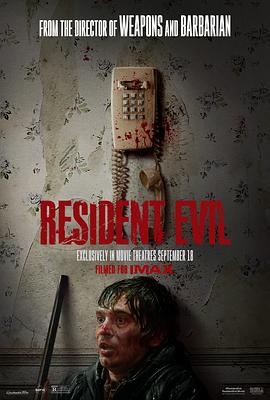

生化危机：爆发夜 / Resident Evil
又名：生化危机 重启版 / 恶灵古堡：爆发夜(台) / 生化危机0 / Resident Evil 0 / Resident Evil: The Umbrella Chronicles
jumpscare太多，根本防不住，因此后半程放松身心地被吓了。几个场面制景很不错，真真有临场感，切换得也不突兀。喜欢男主吐槽役的身份，一路吐槽一路笑，另外对女友的暗戏挺满意的，至少写完整了。结局太悲伤，所有人都没错，但所有人都有罪。
作品信息
| 导演 | 扎克·克雷格 |
| 编剧 | 扎克·克雷格 / 谢伊·哈顿 |
| 主演 | 奥斯汀·艾布拉姆斯 / 扎克·切利 / 卡莉·瑞斯 / 保罗·沃尔特·豪泽 / 安德莉亚·米尔特纳 / 萨拉·帕克斯顿 / 威尔·梅瑞克 / 约翰诺·威尔逊 / 卡雷尔·多布雷 / 佐伊·贝拉斯 / 刘观凯 / 葛瑞芬·纽曼 / 玛格达莱娜·希托娃 / 艾米莉·皮格福德 / 乔·马丁 / 詹姆斯·博蒙特 / 凯伦·高夫 / 扎克·克雷格 / 伊斯拉·麦克雷 |
| 类型 | 科幻 / 惊悚 / 恐怖 |
| 制片国家/地区 | 德国 / 法国 / 美国 |
| 语言 | 英语 |
| 上映日期 | 2026-10-05(中国大陆) / 2026-09-16(法国) / 2026-09-18(美国) |
| 片长 | 94分钟 |
| IMDb | tt35538033 |
说过什么
2026-10-07 15:52:33
广播 · 看过 · ★★★★☆
jumpscare太多，根本防不住，因此后半程放松身心地被吓了。几个场面制景很不错，真真有临场感，切换得也不突兀。喜欢男主吐槽役的身份，一路吐槽一路笑，另外对女友的暗戏挺满意的，至少写完整了。结局太悲伤，所有人都没错，但所有人都有罪。
最后一次看到是 2026-10-07T23:12:38+08:00 · 豆瓣原页